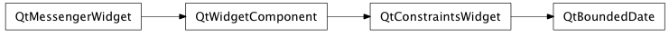

Bases: enaml.widgets.constraints_widget.ConstraintsWidget
A base class for components which edit a Python datetime.date object bounded between minimum and maximum values.
This class is not meant to be used directly.
The minimum date available in the date edit. If not defined then the default value is September 14, 1752.
The maximum date available in the date edit. If not defined then the default value is December 31, 7999.
The currently selected date. Default is the current date. The value is bounded between minimum and maximum.
Return a dictionary which contains all the state necessary to initialize a client widget.
A method called after initialization which allows the widget to bind any event handlers necessary.
alias of __NoInterface__

Bases: enaml.qt.qt_constraints_widget.QtConstraintsWidget
A base class for implementing Qt-Enaml date widgets.
A signal handler to connect to the date changed signal of the underlying widget.
This will convert the QDate to iso format and send the Enaml widget the ‘date_changed’ action.
Return the current date in the control.
| Returns: | result (QDate) – The current control date as a QDate object. |
|---|
Set the widget’s current date.
| Parameters: | date (QDate) – The QDate object to use for setting the date. |
|---|